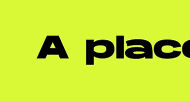

<figure class="w-full px-2">
    
    <p
        class="w-full md:w-2/3 lg:w-1/2 mx-auto text-base md:text-lg xl:text-xl text-symbol text-hanson px-8 text-center mt-8">
        WE'RE
        BUILDING A NEW
        INCLUSIVE <span class="symbol-xl md:symbol-4xl Warmth sympink"></span> AND INTERSECTIONAL <span
            class="symbol-xl md:symbol-4xl Intersectional symlime"></span> STANDARD FOR
        ENTREPRENEURS.</p>
</figure>
<section class="w-full bg-fdllime">
    <picture>
        <source media="(min-width: 650px)" srcset="assets/images/branding/Desktop_Manifesto_marquee.gif">
        <source media="(min-width: 465px)" srcset="assets/images/branding/Tablet_Manifesto_marquee.gif">
        
    </picture>
</section>
<section class="bg-black">
    Map component
</section>
<section class="w-full flex flex-col md:flex-row">
    <div class="w-full md:w-1/2 bg-fdlred text-white"><span class="symbol-biggest symred For"></span></div>
    <div class="w-full md:w-1/2 ">I'm a Founder</div>
</section>
<section class="w-full bg-fdlblue text-white">
    investor
</section>
<section class="w-full bg-fdllime text-black">
    ally
</section>
<section class="w-full">
    faq section
</section>
<figure class="w-full bg-fdlpink text-black">
    gender equality plan
</figure>